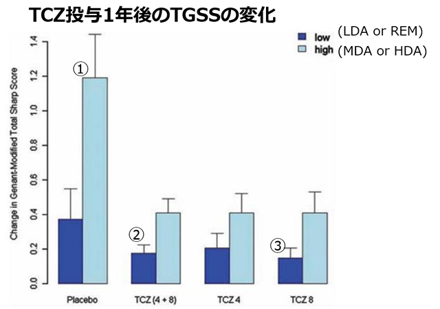

たとえ疾患活動性が中等度から高度であっても、アクテムラを使用していれば関節破壊の進展が抑えられている
目的：TCZの疾患活動性抑制効果を超えた、関節破壊抑制効果への影響を調べる
方法：LITHE試験のプラセボ群とTCZ群の1年後のTGGSを疾患活動性のグループに分けて検討した

①PBO群で活動性がHighでは関節破壊が進行している
②活動性が抑えきれているACT群ではどの群でも骨関節破壊を抑制している
③活動性が抑えきれていない患者でもPBO群と比べるとACT群は骨関節破壊を抑えている
- ・Low群（1年後に低疾患活動性と寛解だった群）ではプラセボ群とTCZ群に有意差なし
- ・High群（1年後に中～高疾患活動性だった群）ではプラセボ群に比べTCZ群で有意にTGGSが低い
たとえ疾患活動性が中等度から高度であっても、アクテムラを使用していれば関節破壊の進展が抑えられている